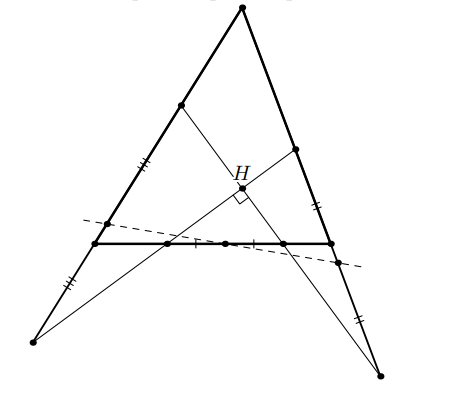
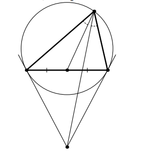

Теорема Дроз-Фарни

Теорема Дроз-Фарни — это свойство двух перпендикуляров, проходящих через ортоцентр произвольного треугольника.
Теорема о симедиане

Отрезки, на которые симедиана делит противоположную сторону, пропорциональны квадратам прилежащих сторон.